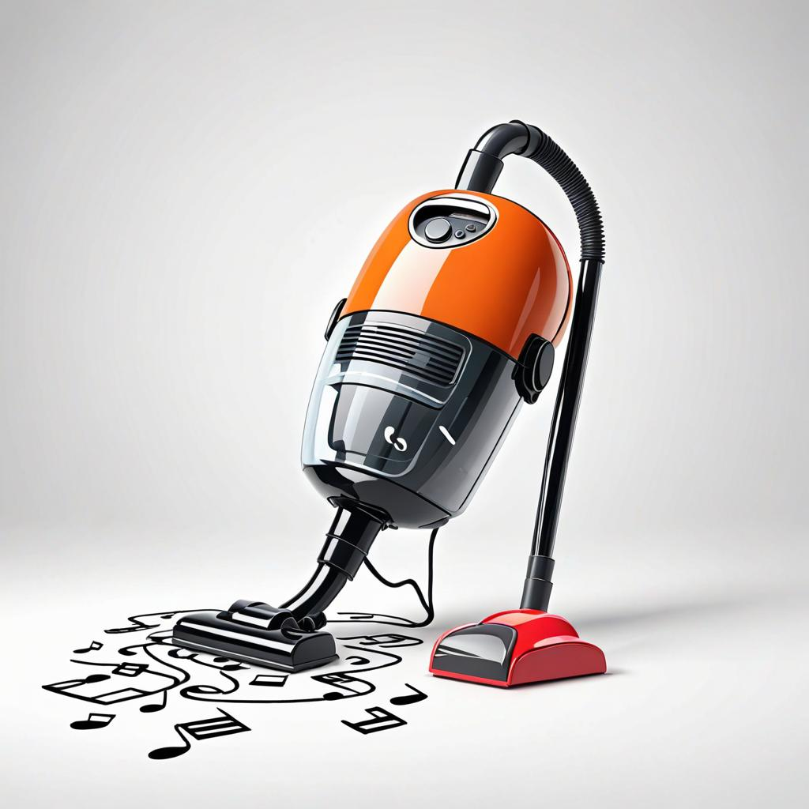

Analyzing and filtering note occurence by point estimation
midiblender
probabilistic filtering
rstatsmusic
midi
rstats
Using matrix representations of MIDI files to mangle them based on point estimates, like a low pass filter cutoff, but for probabilities.
Author
Matt Crump
Published
February 8, 2024
Code
from diffusers import DiffusionPipelinefrom transformers import set_seedfrom PIL import Imageimport torchimport randomimport sslimport osssl._create_default_https_context = ssl._create_unverified_context#locate library#model_id = "./stable-diffusion-v1-5"model_id ="dreamshaper-xl-turbo"pipeline = DiffusionPipeline.from_pretrained( pretrained_model_name_or_path ="../../../../bigFiles/huggingface/dreamshaper-xl-turbo/")pipeline = pipeline.to("mps")# Recommended if your computer has < 64 GB of RAMpipeline.enable_attention_slicing("max")prompt ="futuristic vacuum cleaner on white background. sucking up probabilities of musical notes. cartoon. 80s retro."for s inrange(30):for n in [5,10]: seed = s+21 num_steps = n+1 set_seed(seed) image = pipeline(prompt,height =1024,width =1024,num_images_per_prompt =1,num_inference_steps=num_steps) image_name ="images/synth_{}_{}.jpeg" image_save = image.images[0].save(image_name.format(seed,num_steps))

futuristic vacuum cleaner on white background. sucking up probabilities of musical notes. cartoon. 80s retro.
There’s many ideas swirling around leading me to this MIDI mangling experiment. My preference would be to discuss them in advance of the code, but I’m going to mostly resist that urge. Perhaps another time.
Getting right into then, let’s use midiblender to import the mario music into a matrix.
Code
library(midiblender)#import midimario <-midi_to_object("all_overworld.mid")list2env(mario, .GlobalEnv) # send objects to global environment
<environment: R_GlobalEnv>
Code
# convert midi to matrixpiano_roll <-midi_df_to_matrix(midi_df,track=0)dim(piano_roll)
[1] 128 14113
The piano_roll matrix has 128 rows for each possible midi note, and 14113 columns for each midi time tick. All of the notes are coded as 1s in this matrix. All other cells are set to 0.
Point estimates of note occurrence probability
Let’s do a bit of data analysis. How many notes occur in this midi file?
Code
sum(piano_roll)
[1] 901
What are the frequencies of each note across the song?
There a quick sorted plot, most notes have 0 probability of occurrence, and then it swings up to a max of 0.1054384. Neato.
In previous posts I’ve been taking point estimation much further in terms of reshaping the matrix and estimating probabilities for notes in particular time slices. I haven’t yet tried doing something simple like the above, and using only these probabilities to generate new sequences. And, I’m not going to do that here either.
Filtering note occurrences by point estimates.
I have a bunch of things I want to try with this, but in this post I’ll keep it simple to get the idea down.
Here’s a simple filtering idea. Remove notes from the original piece depending on their point estimates. We could listen to mario with all of the high probability notes removed, or all of the low probability notes removed, or whatever combo one desires.
The more complicated plans involve deriving point estimates for conditional probabilities based on prior note occurrence, and/or note x time probabilities, and then filtering notes on that basis.
Before I do that, here’s a short digression. Consider listening to note sequences as an exercise in dynamic expectation. This is a pretty common notion in music and music cognition. You hear notes over time as they repeat and change, and have feelings of expectation about what comes next.
Let’s say you are a note accumulator matrix, like the piano roll. As you accumulate note occurrences, some happen more often than others. If the music has repetitive structure, then there could be a sense of expectation. The new notes might have the same frequency profiles as the old notes, giving a sense of congruency…this is what the matrix was expecting. The new notes might have different frequencies, violating the expectation of the matrix, but nevertheless adding to the total accumulation of notes…the matrix would be less surprised about similar deviations the next time. Apologies for over-anthropomorphizing the matrix.
The point estimates above are very global point estimates of note probability taken over all local contexts. After listening to mario music on repeat, as I did for who knows how long as a kid, these probabilities represent a kind of mean expectation about what notes I should be hearing in general.
I don’t know the music analysis literature well enough to know what this would be called, but it would be pretty straightforward to look at notes in a musical piece in terms of how they deviate from their point estimates. And, there are lots of interesting questions here about which point estimates to choose. Ones from the song, or set of songs like it, or a massive corpus of midi files, or a person’s entire listening experience. But, the analysis stuff is for another day.
Gotta reign in this digression. One point is there seems to be some interesting applied value in being able to quickly code notes in terms of their point estimates. It’ll be super easy to do this in R. For example, we would just replace all the 1s in each row of the piano matrix with their respective point estimates.
Great, so what do we do with the new matrix? Lots of possibilities come to mind. This could be a quick way to edit for wrong notes. If this was a recorded performance, and you accidentally flubbed a couple notes, these could be low frequency occurrences with very low probability of occurrence. Just delete the really low probability notes and re-constitute the midi file from the matrix.
Need to be delicate with the low probability notes, they might be really surprising and special. Maybe there needs to be more low probability notes.
The goal of this post was to listen to mario with high probability notes deleted, or with low probability notes deleted. We’ll do both. I suspect the technique could be interesting also with respect to probabilistically generated notes, many of which sound awful. Maybe tracking them and deleting them by their point estimates could make the probabilistic sequences sound “better”. If I think about this in terms of a eurorack module, I don’t really care how musical it sounds, I just want a knob to turn and mangle the probabilities in any direction for fun timez.
No more digression, let’s do this thing.
High pass probability filtering: Mario without high probability notes
Did a quick check and notes with a higher than 5% point estimate account for about 56% of all of the note occurrences. These notes get played a lot in mario.
Code
sum(note_probabilities[note_probabilities > .05])
[1] 0.5615982
OK, bye bye high frequency notes. Setting those ones to 0. Setting all other values to 1, converting this back into a note occurrence matrix.
Now, a bit of {midiblender} magic, and let’s turn this matrix back into a midi file and listen to it.
Code
track_0 <-copy_midi_df_track(midi_df,track_num =0)# transform back to midimidi_time_df <-matrix_to_midi_time(midi_matrix = mario_no_low,smallest_time_unit =1,note_off_length =8)meta_messages_df <-get_midi_meta_df(track_0)meta_messages_df <-set_midi_tempo_meta(meta_messages_df,update_tempo =500000)split_meta_messages_df <-split_meta_df(meta_messages_df)new_midi_df <-matrix_to_midi_track(midi_time_df = midi_time_df,split_meta_list = split_meta_messages_df,channel =0,velocity =100)#### bounce# update miditapyr dfmiditapyr_object$midi_frame_unnested$update_unnested_mf(new_midi_df)#write midi file to diskmiditapyr_object$write_file("mario_no_low.mid")########## bounce to mp3 with fluid synthtrack_name <-"mario_no_low"wav_name <-paste0(track_name,".wav")midi_name <-paste0(track_name,".mid")mp3_name <-paste0(track_name,".mp3")# synthesize midi file to wav with fluid synthsystem_command <- glue::glue('fluidsynth -F {wav_name} ~/Library/Audio/Sounds/Banks/nintendo_soundfont.sf2 {midi_name}')system(system_command)# convert wav to mp3av::av_audio_convert(wav_name,mp3_name)# clean up and delete wavif(file.exists(wav_name)){file.remove(wav_name)}
Again, pretty sparse, but emphasizing different aspects of mario.
Conclusions: I want a eurorack module for this
I wish I could just dial around a knob, like a filter knob, that did this to a midi file while it was playing. Maybe someday I’ll figure out how to do that for a eurorack module.
These examples didn’t sound like much, but whatever. I could imagine this being very useful in general. For example, it would be nice to step back and look some composition and quickly appreciate what the spread of point estimates are. Maybe it is too regular, so you filter down the high probability stuff, or the opposite. It would be fun to have an equalizer like situation, where instead of emphasizing different wave frequencies, it allowed one to bring up or down different note probabilities. I think this would have really interesting effects, especially on super dense improvisational stuff, where I would probably want to delete things, and being able to do that on the basis of probabilities seems promising.
This is just a quick and dirty example, will fool around with this more for sure.